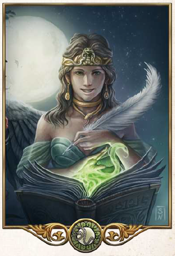

"Noch mag dein Geist unvollkommen sein. Aber lerne und wachse daran, denn die Götter haben dir Gaben gegeben, die es zu nutzen und zu vervollkommen gilt."
Aspekte: Wissen, Weisheit, Gelehrsamkeit, Magie, Wandel
Symbole/Wahrzeichen: Ouroboros (eine Schlange, die sich selbst in den Schwanz beißt)
Heiliges Tier: Schlange
Als Göttin des Wissen, der Weisheit und der Wissenschaften gilt Hesinde, die häufig auch als Herrin der Magie verehrt wird. In ihrem Namen wird geforscht und gelehrt, wobei die Hesindekirche genau darauf achtet, welches Wissen weitergegeben werden darf und welches lieber nur Ausgewählten zugänglich gemacht werden sollte. Da auch die Kirche oftmals Hesinde zugeordnet werden, fördert die Kirche zahlreiche Künstler. Vor allem Gelehrte und Magier gehören zu ihrer Anhängerschaft und die Tempel der Göttin verfügen nicht selten über ansehnliche Bibliotheken oder Kartotheken, in denen emsig Wissen gesammelt wird. Die Geweihten Hesindes sind grüngold gekleidet und tragen ständig kleine Notizbüchlein mit sich, in die sie ihre Erkenntnisse eintragen: die Bücher der Schlange. Die weise Schlange gilt Hesinde als heilig und man sieht sie häufig in Tempeln, lebend, als Abbild oder als kunstvolle Schmuckstücke um den Hals der Geweihten gewunden. Der wichtigste Tempel der Göttin steht in Kuslik, die höchste Priesterin des Kultes ist die Magisterin der Magister.